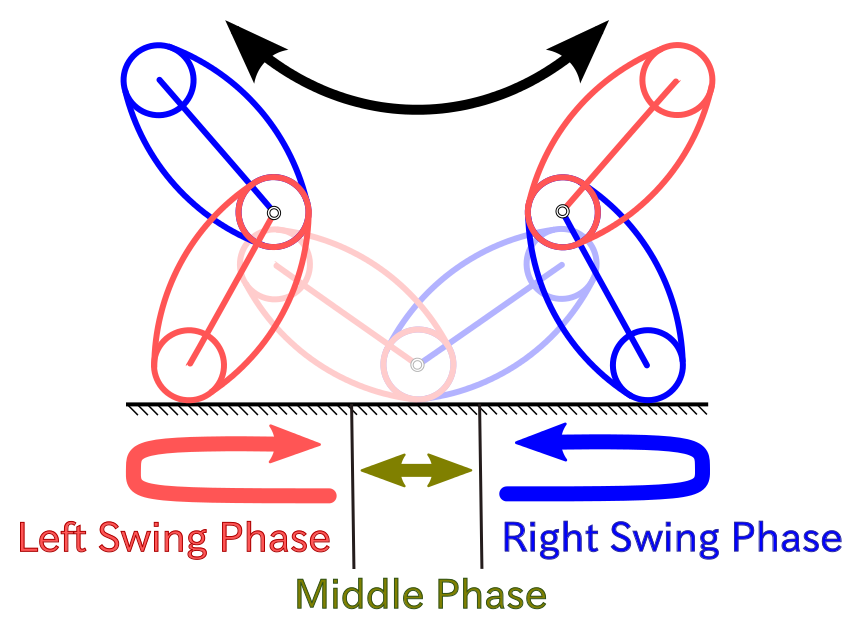

本研究では初期姿勢として高いエネルギーの姿勢を与えなくても，Denguribotを低いエネルギー姿勢から高いエネルギー姿勢までDenguribotを起き上がらせ，連続的転がり運動に移行させることを目指す．
このため，Denguribot が停止している低いエネルギー姿勢から,自らリンクを揺り動 かすことでエネルギーを増やし,転がり運動に移行できる状態まで Denguribot を起き上がらせることを目的とした.起き上がりを実現する制御系として,動 かすリンクの角度を転がり中心回りの一般化運動量 P と転がり角度 φ の二つの 状態の関数に同期させる制御則を提案する.状態を用いたことで提案手法は初 期姿勢の変化や外乱に強い制御則となっている.
設計した制御則を用いてシミュレーションをおこない,起き上がりを実現で きることを確認したのち,実際に制御則を実験機に適用し実験環境での起き上 がり運動を実現した.
- 井口勇希，関口和真，三平満司， "Denguribotの起き上がり制御"， 第55回システム制御情報学会研究発表講演会-SCI'11-，2011